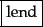
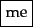
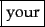
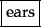
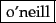
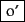
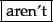
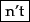
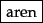
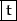

Given a character sequence and a defined document unit, tokenization is the task of chopping it up into pieces, called tokens , perhaps at the same time throwing away certain characters, such as punctuation. Here is an example of tokenization:
Input: Friends, Romans, Countrymen, lend me your ears;These tokens are often loosely referred to as terms or words, but it is sometimes important to make a type/token distinction. A token is an instance of a sequence of characters in some particular document that are grouped together as a useful semantic unit for processing. A type is the class of all tokens containing the same character sequence. A term is a (perhaps normalized) type that is included in the IR system's dictionary. The set of index terms could be entirely distinct from the tokens, for instance, they could be semantic identifiers in a taxonomy, but in practice in modern IR systems they are strongly related to the tokens in the document. However, rather than being exactly the tokens that appear in the document, they are usually derived from them by various normalization processes which are discussed in Section 2.2.3 .
Output:
   
The major question of the tokenization phase is what are the correct tokens to use? In this example, it looks fairly trivial: you chop on whitespace and throw away punctuation characters. This is a starting point, but even for English there are a number of tricky cases. For example, what do you do about the various uses of the apostrophe for possession and contractions?
Mr. O'Neill thinks that the boys' stories about Chile's capital aren't amusing.For O'Neill, which of the following is the desired tokenization?
And for aren't, is it:


A simple strategy is to just split on all non-alphanumeric characters, but while


 ?
These issues of tokenization are language-specific. It thus requires the language of the document to be known. Language identification based on classifiers that use short character subsequences as features is highly effective; most languages have distinctive signature patterns (see page 2.5 for references).
For most languages and particular domains within them there are unusual specific tokens that we wish to recognize as terms, such as the programming languages C++ and C#, aircraft names like B-52, or a T.V. show name such as M*A*S*H - which is sufficiently integrated into popular culture that you find usages such as M*A*S*H-style hospitals. Computer technology has introduced new types of character sequences that a tokenizer should probably tokenize as a single token, including email addresses (jblack@mail.yahoo.com), web URLs (http://stuff.big.com/new/specials.html), numeric IP addresses (142.32.48.231), package tracking numbers (1Z9999W99845399981), and more. One possible solution is to omit from indexing tokens such as monetary amounts, numbers, and URLs, since their presence greatly expands the size of the vocabulary. However, this comes at a large cost in restricting what people can search for. For instance, people might want to search in a bug database for the line number where an error occurs. Items such as the date of an email, which have a clear semantic type, are often indexed separately as document metadata parametricsection.
In English, hyphenation is used for various purposes ranging from splitting up vowels in words (co-education) to joining nouns as names (Hewlett-Packard) to a copyediting device to show word grouping (the hold-him-back-and-drag-him-away maneuver). It is easy to feel that the first example should be regarded as one token (and is indeed more commonly written as just coeducation), the last should be separated into words, and that the middle case is unclear. Handling hyphens automatically can thus be complex: it can either be done as a classification problem, or more commonly by some heuristic rules, such as allowing short hyphenated prefixes on words, but not longer hyphenated forms.
Conceptually, splitting on white space can also split what should be regarded as a single token. This occurs most commonly with names (San Francisco, Los Angeles) but also with borrowed foreign phrases (au fait) and compounds that are sometimes written as a single word and sometimes space separated (such as white space vs. whitespace). Other cases with internal spaces that we might wish to regard as a single token include phone numbers ((800) 234-2333) and dates (Mar 11, 1983). Splitting tokens on spaces can cause bad retrieval results, for example, if a search for York University mainly returns documents containing New York University. The problems of hyphens and non-separating whitespace can even interact. Advertisements for air fares frequently contain items like San Francisco-Los Angeles, where simply doing whitespace splitting would give unfortunate results. In such cases, issues of tokenization interact with handling phrase queries (which we discuss in Section 2.4 (page  )), particularly if we would like queries for all of lowercase, lower-case and lower case to return the same results. The last two can be handled by splitting on hyphens and using a phrase index. Getting the first case right would depend on knowing that it is sometimes written as two words and also indexing it in this way. One effective strategy in practice, which is used by some Boolean retrieval systems such as Westlaw and Lexis-Nexis (westlaw), is to encourage users to enter hyphens wherever they may be possible, and whenever there is a hyphenated form, the system will generalize the query to cover all three of the one word, hyphenated, and two word forms, so that a query for over-eager will search for over-eager OR ``over eager'' OR overeager. However, this strategy depends on user training, since if you query using either of the other two forms, you get no generalization.
)), particularly if we would like queries for all of lowercase, lower-case and lower case to return the same results. The last two can be handled by splitting on hyphens and using a phrase index. Getting the first case right would depend on knowing that it is sometimes written as two words and also indexing it in this way. One effective strategy in practice, which is used by some Boolean retrieval systems such as Westlaw and Lexis-Nexis (westlaw), is to encourage users to enter hyphens wherever they may be possible, and whenever there is a hyphenated form, the system will generalize the query to cover all three of the one word, hyphenated, and two word forms, so that a query for over-eager will search for over-eager OR ``over eager'' OR overeager. However, this strategy depends on user training, since if you query using either of the other two forms, you get no generalization.
Each new language presents some new issues. For instance, French has a variant use of the apostrophe for a reduced definite article the before a word beginning with a vowel (e.g., l'ensemble) and has some uses of the hyphen with postposed clitic pronouns in imperatives and questions (e.g., donne-moi give me). Getting the first case correct will affect the correct indexing of a fair percentage of nouns and adjectives: you would want documents mentioning both l'ensemble and un ensemble to be indexed under ensemble. Other languages make the problem harder in new ways. German writes compound nouns without spaces (e.g., Computerlinguistik `computational linguistics'; Lebensversicherungsgesellschaftsangestellter `life insurance company employee'). Retrieval systems for German greatly benefit from the use of a compound-splitter module, which is usually implemented by seeing if a word can be subdivided into multiple words that appear in a vocabulary. This phenomenon reaches its limit case with major East Asian Languages (e.g., Chinese, Japanese, Korean, and Thai), where text is written without any spaces between words. An example is shown in Figure 2.3 . One approach here is to perform word segmentation as prior linguistic processing. Methods of word segmentation vary from having a large vocabulary and taking the longest vocabulary match with some heuristics for unknown words to the use of machine learning sequence models, such as hidden Markov models or conditional random fields, trained over hand-segmented words (see the references in Section 2.5 ). Since there are multiple possible segmentations of character sequences (see Figure 2.4 ), all such methods make mistakes sometimes, and so you are never guaranteed a consistent unique tokenization. The other approach is to abandon word-based indexing and to do all indexing via just short subsequences of characters (character  -grams), regardless of whether particular sequences cross word boundaries or not. Three reasons why this approach is appealing are that an individual Chinese character is more like a syllable than a letter and usually has some semantic content, that most words are short (the commonest length is 2 characters), and that, given the lack of standardization of word breaking in the writing system, it is not always clear where word boundaries should be placed anyway. Even in English, some cases of where to put word boundaries are just orthographic conventions - think of notwithstanding vs. not to mention or into vs. on to - but people are educated to write the words with consistent use of spaces.
-grams), regardless of whether particular sequences cross word boundaries or not. Three reasons why this approach is appealing are that an individual Chinese character is more like a syllable than a letter and usually has some semantic content, that most words are short (the commonest length is 2 characters), and that, given the lack of standardization of word breaking in the writing system, it is not always clear where word boundaries should be placed anyway. Even in English, some cases of where to put word boundaries are just orthographic conventions - think of notwithstanding vs. not to mention or into vs. on to - but people are educated to write the words with consistent use of spaces.